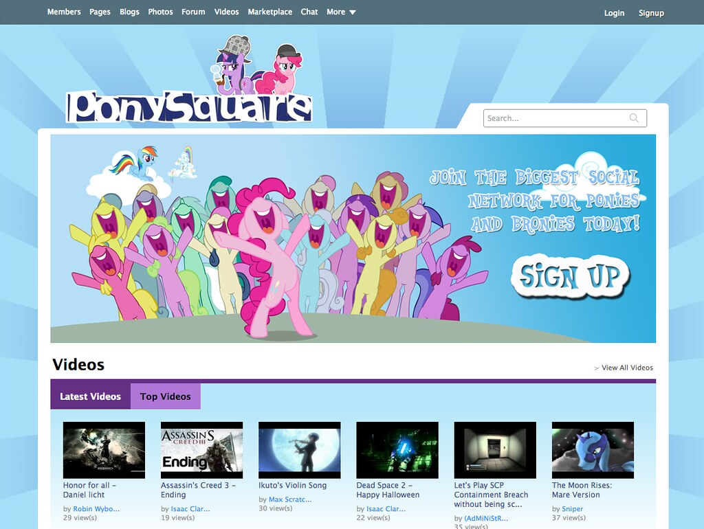
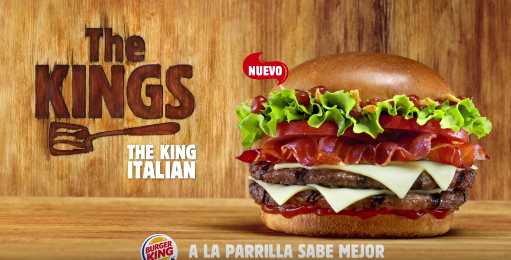
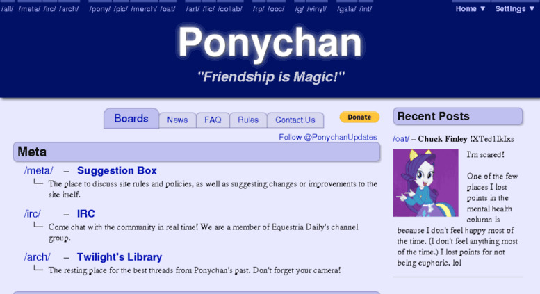
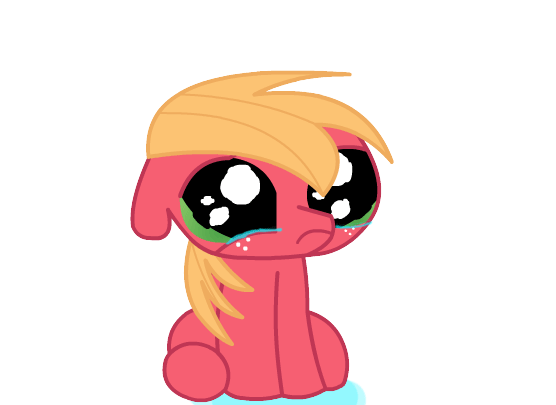

|
Ponys Desde el inicio de su emisión: "My Little Pony: Friendship is Magic", ha logrado incrementar de forma casi ramática su popularidad a través de la web, y esto fue (en parte), gracias a la cuarta generación de la franquicia. Pero... ¿Cuales fueron o son los aspectos más importantes de la serie?, o deberíamos decir... ¿De su fandom ? muchos de nosotros ya hemos sido impactados por la popularidad de la serie gracias a los diferentes memes, referencias o parodias que circulan por toda la web. Se podría decir que existió una extensa cantidad de información con contenido de la serie y contenido creado por los fans. A continuación En su momento se crearon cantidad de paginas web inspiradas en My Little Pony: |
FimFiction: para leer fanfictions pony https://www.fimfiction.net/ DerpiBooru: encontrar/subir arte de la serie https://derpibooru.org/ PonySquare: pagina estilo Facebook  |
|
 PonyChan: pagina al estilo 4chan  Equestria Daily: https://www.equestriadaily.com/  |
Y esos son solo algunos ejemplos! Probablemente muchos no lo recordemos, son cosas que quedaron en el pasado y se fueron eliminando de nuestras memorias a la par que se eliminaron del internet. O eramos muy jóvenes o muy viejos para eso. Las personas crecemos y dejamos cosas atrás No se como explicar bien lo que fue con mis palabras No estuve ahí, pero si existen testimonios en internet de la gente y múltiples videos que dicen Nunca va a volver a haber una serie igual o un fandom como el de My Little Pony Con demasiada cantidad de artistas o simples fans comprometidos, con la creatividad para crear series o animaciones que llegan a igualar el contenido original, hasta que son demandados por Hasbro. Para producir canciones de las que continua surgiendo nuevo material. Y también para ser una aberración asquerosa y traumática para muchas personas (Existen videos de chicas contando como hasta el día de hoy quedaron traumatizadasv cuando niñas por el contenido que se podía encontrar en internet referente a MLP de ese momento) Desde videos o imágenes con los personajes de la serie siendo torturados muy explícitamente hasta Videos o imágenes (photoshopeados o con peluches) de adultos teniendo “relaciones sexuales” con estos mismos, imágenes pornográficas de los ponys y hasta productos en venta relacionados |